Modelling and Analysis of Real-Time Systems
Spring 2023
DTU Compute Technical University of Denmark
Lecturers:
Hans Henrik Løvengreen (hhlo@dtu.dk) Michael R. Hansen (mire@dtu.dk) Martin Schöberl (masca@dtu.dk)


Introduction to Real-Time Systems
Examples – why is this important?
Some definitions – what exactly are we dealing with?
Development techniques – how should we design and validate a real-time system?
Introduction to Uppaal
Tool for modelling and verifying correctness of real-time systems
Today’s Exercises
Simple Light Control
Goat/Wolf/Cabbage Puzzle
Introduction to Real-Time Systems
2
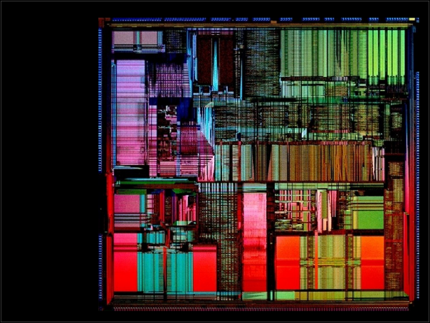
Intel’s Pentium Processor [Dec. 1994]
4.999999/14.999999
gives 0.333329, but should have been 0.33333329
Intel had to replace several million defect processors
Cost Intel several hundred million dollars
Introduction to Real-Time Systems
3
Ariane 5 Rocket [4 June 1996]
Floating-point conversion failed and the control system crashed
The rocket self-destructed 40 sec. after take-off
The problem: buffer overflow in the control software taken over from Ariane 4
The software had not been re-tested (to save money)
Cost ESA $600M
Introduction to Real-Time Systems
5

NASA’s Mars Climate Orbiter [23 Sep 1999]
One engineering team used English units (ft)
of measurements, another team used metric units (m)
Landing procedure did not start at the right time
Spacecraft exploded in Mars’ atmosphere
Introduction to Real-Time Systems 6
NASA’s Mars Polar Lander [3 Dec 1999]
The landing software mistakenly identified vibrations from the deployment of the lander's legs as being caused by the vehicle touching down on the Martian surface
The vehicle's descent engines was cut off while it was still 40 meters above the surface, rather than on touchdown as planned
Cost NASA several hundred million $
Introduction to Real-Time Systems 7

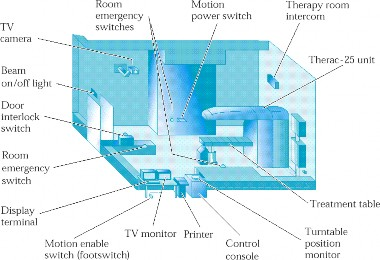

Patients received massive X-ray overdoses
2 patients died
Many others were seriously injured and handicapped
Introduction to Real-Time Systems
8


The Northeast blackout (2003) was triggered by a local outage that went undetected due to a race condition in General Electric Energy's XA/21 monitoring software
A fault in Knight Capital Group’s trading system (2012) caused it to flood the market with erratic trades resulting in a loss of over $440M in half an hour
The Israeli Beresheet moon lander (2019) crashed because an engine reset command did not work in time
Abrupt Lime Scooter wheel blocks (2019) causing injuries led to ban in Switzerland


A computing system that must react within precise timing constraints to events in the environment. As a consequence, the correct behaviour of these systems depends not only on the value of the computation but also on the time at which the results are produced.
[Stankovic and Ramamritham 88]
A system in which the time at which output is produced is significant. This is usually because the input corresponds to some movement in the physical world, and the output has to react to that same movement. The lag from input time to output time must be sufficiently small for acceptable timelines.
[Oxford Dictionary of Computing]
An interactional system that maintains on-going relationship with an asynchronous environment, i.e., an environment that progresses in an uncooperative manner.
[Koymans, Kuiper, Zijlstra,1988]
Introduction to Real-Time Systems 14

Examples: anti-locking systems, railway crossings, air traffic controls, . . .
Examples: multimedia systems, data acquisition for a process control system, . . .


Train crossing systems
Highway and air traffic control
Robot control
Production lines
Mobile phones, cameras, CD players, TV-sets
Multimedia applications
Cars
Controllers for washing machines, microwave ovens
Medical applications
General term: Cyber Physical Sytems
Introduction to Real-Time Systems
20

An embedded (computer) system is a system where a computer is a component of a physical environment
Some observations:
99% (est.) of all microprocessors are used in embedded systems
Many embedded systems are safety-critical
correctness is a must for safety
Many embedded systems are hardly maintainable
correctness is a must for cost

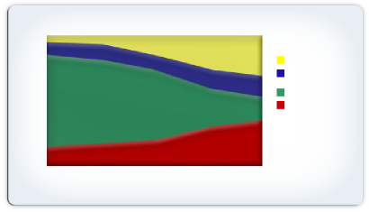

Today’s Software Development Process:
Only 18% of time spent on coding, 35% debugging!
100%
90%
80% Documentation
70% Support &
60% Management
Coding
50%
Finding &
40% Removing Defects
30%
20%
10%
0%
100 1000 10000 100000 1M
Lines of Code
Source: Capers Jones, Estimating Software Costs, pg. 140
[If debugging is the process of removing bugs, then programming must be the process of putting them in!]
Introduction to Real-Time Systems
22

Today’s Software Development Process: Only 13% of projects are on time!
100%
90%
80% Early
70% On-time
60% Delayed
50% Canceled
40%
30%
20%
10%
0%
100 1000 10000 100000 1M
Lines of Code
Source: Capers Jones, Patterns of Software Systems Failure & Success
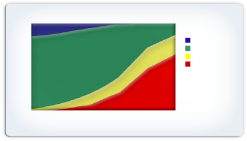
% of Effort by Task
% of Projects


Testing is needed, but has limits:
Hard to find certain types of problems (e.g., concurrency)
Huge number of configurations is daunting
Testing reveals the presence of bugs, doesn’t prove the absence
Need more use of formal methods
Mathematical model of system: “specification”
Automated “verification” of software implementation
Used to be impractical due to state space size explosion and CPU speeds
Now routinely used in hardware design, where the cost of a bug is much larger
Increasingly used in large software companies, e.g., Microsoft
Introduction to Real-Time Systems
25

Systems are specified using a language with a precise (mathematically defined) semantics (meaning)
Advantages:
models are unambiguous
models are complete on an abstract level
high quality tools may be defined on the basis of the semantics
A scenario:
Spec ⇚ Design1 ⇚ Design2 · · · ⇚ Implementation
D ⇚ I reads: I is an implementation (or refinement) of D
Each refinement must be validated to ensure that the implementation satisfies the specification

Runs (random or selected) of the system are investigated on the basis of an executable model
Supported by a simulator tool
Undesirable behaviour may be detected on a model
Proof (possibly machine assisted) of φ1 ⇚ φ2
At least larger proof steps must be chosen manually
Model checking of Spec ⇚ Design
It is machine-checked (by a model checker) whether every possible run of the Design is in agreement with the Spec
At least the state explosion problem sets a limit
Introduction to Real-Time Systems
31

Models of real-time systems based on real-time automata
A parallel composition of automata models an embedded computer system as well as the environment
The tool Uppaal is used for modelling, simulation and model checking
Real-time scheduling, modelling and analysis
Other models for real-time systems (e.g. Reactors)


Two mandatory assignments:
Model and analyse a simple real-time system
Extend the system from 1), implement it, test it on a simulation of the environment and deploy it on a physical system
or
Work with a scheduling problem
or
Work with an extension of the Uppaal Tool
or
Use the models/tools for another real-time problem
A two-hours written exam (without computers)
Introduction to Real-Time Systems
35

Knowledge of basic computer science models
Knowledge of logic
Basic knowledge of probability theory
Interest in formal methods
Knowledge of concurrency issues
Models of concurrency (eg. Petri-nets, interleaving model)
Concurrent programming (threads, monitors, … )
Acquaintance with Java programming


Issues of embedding (hardware interfaces, drivers etc.)
Control theory (continous state, PID)
Multi-media aspects (and other soft applications)
Advanced scheduling theory (only basics)
Concurrency related issues (02158)
Advanced model checking algorithms (02246)
Automated reasoning (02256)
General software engineering aspects
Artificial Intelligence
Introduction to Real-Time Systems
38

Introduction to Uppaal Models
Untimed Models

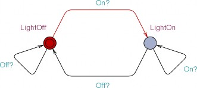
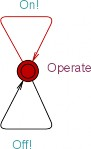

Modelling a reactive system:
Parallel composition || of automata modelling the design and the environment
Initial states are marked with double circuits
An input event e? may synchronize with an output event e!
For a simple light control: controller || person
Introduction to Real-Time Systems
40


A reactive finite automaton is a tuple (Q, Σ, →, q0), where
Q is a non-empty, finite set of states (locations)
Σ is a non-empty, finite set of events
→ ⊆ Q × (Σ × {!, ?}) × Q ∪ Q × Q is the transition relation, and
q0 is the initial state
Notice: A reactive finite automaton has, unlike a finite automaton, no accepting states
Focus is on communication with the environment:
1
2
q a! q
or q1
a?
q
2
And on internal transitions:
q1 q2
An automaton performs a (possibly infinite) sequence of such transitions


Run in parallel, two reactive finite automata: A1 = (P, Σ, →, p0) and A2 = (Q, Σ, →, q0)
may synchronize on matching input/output events or may individually perform internal transitions
This is described by a labelled transition system (S, Σ, →, (p0, q0)) where the states S are P × Q and the labelled
transitions → are determined by the rules:
p a!
1
p
2
q
1
a? q
2
p
1
a? p
(p1,q1)
2
q a!
1
q
2
a
(p1,q1) (p2,q2)
a (p ,q )
2 2
p1 (p1,q1)
Introduction to Real-Time Systems
p2
(p2,q1)
q1
(p1,q1)
q2
(p1,q2)
42


The parallel composition of two reactive automata generalizes to a network of n automata
(Qi, Σ, →, q0i) for 1 ≤ i ≤ n
by allowing pair-wise communication only
The network is closed in the sense that an input event may only occur if a corresponding output event is enabled, and vice versa
Comments:
Let ki = |Qi|
Then the number of states of the network is k1 · k2 · · · kn
This is know as the state explosion
When adding time, the timed automata will still have a finite number of states, but the labelled transition systems for a network of timed automata will have an infinite number of states


Model checking tool for real-time systems, developed at Uppsala University in Sweden and Aalborg University in Denmark, 1997
A system is modelled by a network of timed automata
Declaration of channels (Σ), clocks, constants, finite data structures
Parameterized automata
Networks
A graphical editor is used to model the network of automata
A simulator is used to explore the transitions of the model
A model checker is used to automatically verify certain classes of temporal formulas
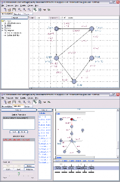
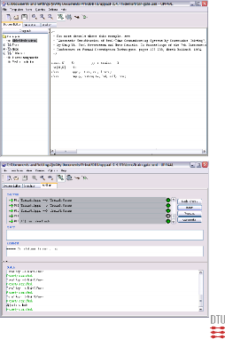
Introduction to Real-Time Systems 44


The system state may be extended by:
Local variables associated with each automaton
System-wide global variables
Variables may be updated by transitions
Transitions are considered to be atomic
Boolean expressions may guard transitions
Introduction to Real-Time Systems
46

An Introduction to Timed Automata using Uppaal
Ha
Michael R. Hansen
Timed Automata: AlurDill 1994
A system is a network of communication timed automata, put in parallel
A timed automaton is a finite state machine with clocks
Ha
A clock is a real-valued variable that is used to measure the progress of time.
Uppaal is a tool box for modelling real-time systems and for
validation and verification of such systems.
Modelling is timed-automata based
Validation is based on simulation
Verification is based on model checking
Consider an untimed system consisting of a Lamp and a User:
A user can switch the light on and off
The lamp reacts appropriately on input from the user
On?
On!
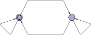
LightOff
LightOn
Off?
On?
Idle
Ha
Off?
Figure: Lamp
Off!
Figure:
User
LightOff, LightOn and Idle are locations
Off and On are channels
Off? and On? are input events
Off! and On! are output events
An input event e? may synchronize with an output event e!
LightOff
LightOn
Off?
On?
On?
Idle
On!
Off?
Off! Ha
−→
−→ · · ·
A path in the un-timed system is a sequence of states altered by events:
−→
(LightOff , Idle) on
where, for example,
(LightOn, Idle) off
(LightOff , Idle) on
−→
(LightOff , Idle) on
(LightOn, Idle) is a transition of the system
because
−→
LightOff on?
LightOn is a transition of the lamp and
−→
Idle on!
Idle is a transition of the user
Global declarations of two channel arrays:
chan On[2]; chan Off[2];
The Lamp template contains two formal parameters: Ha
chan &On, chan &Off
Notice that Channels and clocks must be reference parameters
The system declaration part contains two process assignments:
Lamp0 = Lamp(On[0],Off[0]);
Lamp1 = Lamp(On[1],Off[1]); system Lamp0, Lamp1, User;
The Lamp automaton is as before.
The new user automaton is:
i : int[0,1] On[i]!
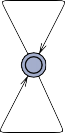
Idle
Ha
i : int[0,1] Off[i]!
Both transitions contain a selection: i: int[0,1]
int[0,1] is a type with two elements 0 and 1
A selection denotes a family of transitions by binding i to the elements of the type
With a single touch on the lamp, it will give a dimmed light,
if it is touched twice quickly, it will give a bright light; otherwise it will switch off the light
Touch?
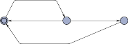
x = 0
Low
x>=3
Touch?
Touch?
x<3
Touch!
Idle
Ha
Off Bright
Touch?
x is a real-valued clock
The value of a clock can be tested in guards x < 3 and x ≤ 3
A clock can be reset x = 0
An edge in a Uppaal template can be equipped with
a select
a synchronization
a guard
an update
Off
Touch?
x = 0
Low
x>=3
Touch?
Touch?
x<3
Bright
Idle
Touch!
Touch?
A state (l, v ) of a timed automaton consist of Ha
a location l , and
a valuation v giving values for the clocks
A transition from one state (l, v ) to another (l1, v 1) can either be
−→
a discrete transition (l, v ) e
(l1, v 1) , where e is an event
−→
a time-progress (l, v ) d
(l, v 1), where d > 0
A path (ignoring the state of the user): e is Touch
(Off , 0) 2 (Off , 2) 3.44 (Off , 5.44) e
(Low, 0) 2.5
(Low, 2.5)
−→ −→
e 3.1
−→ −→
e 1.2
−→ (Bright, 2.5) −→ (Bright, 5.6) −→ (Off , 5.6) −→ (Off , 6.8)
e 3 e 3
−→ (low, 0) −→ (Low, 3) −→ (Off , 3) −→ · · ·
An invariant in a location is used to ensure progress
x cannot progress beyond 3 is location S:
S
x <= 3 x>=2
x=0 Ha
Possible values of x from Uppaal Tutorial [BDL2016]
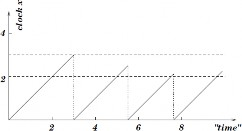
A clock constraint is a conjunction of formulas of the form:
x t><J n or x − y t><J n
where x, y ∈ C are clocks, t><J∈ {<, ≤=, >, ≥} and n in an integer.
Ha
B(C) denotes the set of all clock constraints that can be formed from the set of clocks C
2C denotes the set of all subsets of C
R
≥0
C denotes the set of functions from the set of clocks to the
non-negative real numbers.
≥0
An element v ∈ RC is called a clock evaluation.
[r 1→ 0]v denotes the clock evaluation obtained from v by mapping each clock in r to 0.
A timed automaton is a tuple (L, l0, C, A, E, I), where
L is a finite set of locations,
l0 ∈ L is the initial location,
C is a finite set of clocks, Ha
A is a finite set of actions,
E ⊆ L × A × B(C) × 2C × L is a set of edges, and
I : L → B(C) assigns invariants to locations.
where an edge (l, a, g, r , l1) from location l to l1 is decorated with
an action a – can be input, output or internal
a guard g,
a set of clocks r that is reset
The semantics of a timed automaton (L, l0, C, A, E, I) is a labelled transition system (S, s0, −→), where
≥0
– S = {(l, v ) ∈ L × RC
is the set of states,
| v satisfies the invariant I(l )}
Ha
s0 = (l0, v0) is the initial state, and
the transition relations −→⊆ S × (A ∪ R≥0) × S is such that
−→
(l, v ) d
(l, v + d ), for d > 0
if v + d 1 satisfies the invariant I(l ) for every d 1 : 0 ≤ d 1 ≤ d , and
−→
(l, v ) a
(l1, v 1)
if there is and edge (l, a, g, r , l1) ∈ E such that
v satisfies the guard g,
v 1 = [r 1→ 0]v, and
v 1 satisfies the invariant I(l1) of the target location.
A path is time divergent when time growths towards infinity; otherwise it is time convergent
Ha
A path is Zeno if it is time-convergent and it performs infinitely many discrete actions
A state is a deadlock state if there are no outgoing action transitions neither from the state itself or any of its delay successors
A state contains a timelock if there is no time-divergent path starting from it.
Timelocks and Zeno paths represent typical modelling flaws:
They should be avoided in the models.
Add a test automaton to the system:
Ha
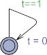
where t is a new clock
Verify the liveness property: t==0 --> t==1
A channel may be declared as urgent: There will be no delay if an edge with a synchronization over an urgent channel can be
taken Ha
A location may be declared as urgent: There will be no delay in an urgent location
A location may be declared as committed: There will be no delay in a committed location, and the next transition must involve an automaton in a committed location.
We will consider these features later in the course
Computation Tree Logic and UPPAALs query language
Michael R. Hansen
1 DTU Compute, Technical University of Denmark Computation Tree Logic and UPPAALs query language MRH 02/09/2023
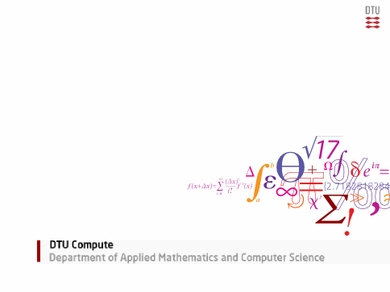
Operational models
a
An operational model like a timed-automata model is good at, for example
system analysis through simulation
prototype development, code generation, and hardware synthesis
but bad for supporting declarative requirements like:
Every message will be answered within 20 ms
Two trains will not be at an intersection simultaneously
. . .
2 DTU Compute, Technical University of Denmark Computation Tree Logic and UPPAALs query language MRH 02/09/2023

The model checking problem
A model checking problem has the form:
M |= φ? a
where
M is typically an operational system model, e.g. given by a network of timed automata
φ is a formula in a logic for expressing requirements unambiguously in a declarative manner
The answer to the question is YES if every behavior of M satisfies φ, and otherwise NO.
Model checking provides guarantees
Here we shall use Computation Tree Logic (CTL) and the Timed version Timed CTL as for expressing requirements.
3 DTU Compute, Technical University of Denmark Computation Tree Logic and UPPAALs query language MRH 02/09/2023

Computation tree
A state of an automaton can be considered as spanning a a
computation tree, for example:
CTL is a logic over such computation trees.
4 DTU Compute, Technical University of Denmark Computation Tree Logic and UPPAALs query language MRH 02/09/2023
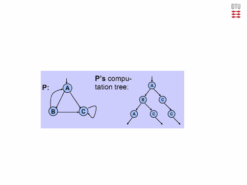
Syntax of CTL
The syntax of CTL is described by the grammar:
a
φ, ψ :: − a | ¬φ | φ ∧ ψ | φ ∨ ψ | φ ⇒ ψ (propositional fragment)
| EXφ | AXφ | EFφ | AFφ | EGφ | AGφ | φEUψ | φAUψ
where a ∈ ap is an atomic proposition.
The modalities are obtained by combining
path quantifiers:
A (all) means for all path originating in the current state, and
E (exists) means for some part originating in the current state.
temporal operators F, G, X and U are interpreted on a path:
F φ (finally) means for some state on the path: φ,
G φ (globally) means for all states on the path: φ,
X φ (next) means the next state on the path: φ, and
φ U ψ (until) means that ψ holds for some state sj on the path, and
φ holds for all previous states si , i < j on that path.
5 DTU Compute, Technical University of Denmark Computation Tree Logic and UPPAALs query language MRH 02/09/2023

Examples
a
It is possible that the lamp is never on: EG ¬on.
The system never deadlocks: AG ¬deadlock.
It is always possible to restart: AG EF restart.
The system always eventually breaks, but it functions until then:
work AU break.
6 DTU Compute, Technical University of Denmark Computation Tree Logic and UPPAALs query language MRH 02/09/2023

Semantics
a
CTL formulas are interpreted over Kripke structures (or automata)
K = (V , E , L, I), where
V is a finite set of vertices (or states).
E ⊆ V × V is the transitions. If (v , v ′) ∈ E , then state v has v ′
as a successor state
L : V → 2AP is a labelling function. If L(v ) = {a1, . . . , am}, then each atomic proposition ai (for 1 ≤ i ≤ m) holds in state v .
I ⊆ V is a set of initial states
A path π of K = (V , E , L, I) is an infinite sequence of states:
π = s0s1 · · · si si+1 · · · such that (si , si+1) ∈ E , i ≥ 0.
For any path π = s0s1 · · · si si+1 · · · , let πk = sk for k ≥ 0.
7 DTU Compute, Technical University of Denmark Computation Tree Logic and UPPAALs query language MRH 02/09/2023

Example: Kripke structure – initial states are left out
{r} {}
0 1
a
{p,q,r} 2
{p}
3
4
{q}
5
{p,r}
{q,r} 6
7 {p,q}
The formula
Example from BaierKatoen2008
EF((p ⇔ r ) ∧ ¬(p ⇔ q))
holds in the following states: {0, 1, 4, 5}
8 DTU Compute, Technical University of Denmark Computation Tree Logic and UPPAALs query language MRH 02/09/2023
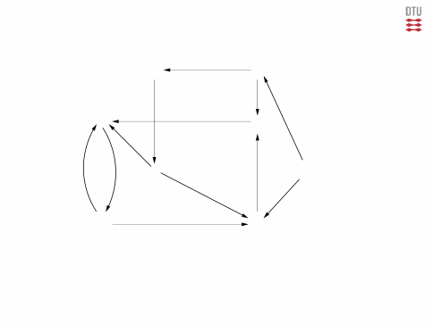
Semantic relations
a
Given Kripke structure: K = (V , E , L, I) and formula φ, we define two semantic relations:
s, K |= φ, where s ∈ V reads: ”φ holds in state s”
K |= φ reads: ”φ holds in the Kripke structure K ” Where the last one is defined in terms of the first:
K |= φ iff s, K |= φ, for every initial state s ∈ I
9 DTU Compute, Technical University of Denmark Computation Tree Logic and UPPAALs query language MRH 02/09/2023

Definition of s, K |= φ (Propositional part)
a
Given Kripke structure: K = (V , E , L, I).
We define s, K |= φ by structural induction on φ:
s, K |= a iff a ∈ L(s)
s, K |= ¬φ iff not s, K |= φ (also written s, K |= φ)
s, K |= φ ∧ ψ iff s, K |= φ and s, K |= φ
s, K |= φ ∨ ψ iff s, K |= φ or s, K |= φ
s, K |= φ ⇒ ψ iff s, K |= φ or s, K |= ψ
Other propositional cases are straightforward.
10 DTU Compute, Technical University of Denmark Computation Tree Logic and UPPAALs query language MRH 02/09/2023

Definition of s, K |= φ (Modalities)
s, K |= EX φ iff for some path π with π0 = s: π1, K |= φ
s, K |= AX φ iff for every path π with π0 = s: π1, K |= φ a
s, K |= EF φ
iff for some path π with π0 = s: πk , K |= φ, for some k ≥ 0
s, K |= AF φ
iff for every path π with π0 = s: πk , K |= φ, for some k ≥ 0
s, K |= EG φ
iff for some path π with π0 = s: πk , K |= φ, for all k ≥ 0
s, K |= AG φ
iff for every path π with π0 = s: πk , K |= φ, for all k ≥ 0
s, K |= φ EU ψ
iff for some path π with π0 = s: πk , K |= ψ, for some k ≥ 0,
and for all i : 0 ≤ i < k : πk , K |= φ
s, K |= φ AU ψ
iff for every path π with π0 = s: πk , K |= ψ, for some k ≥ 0,
and for all i : 0 ≤ i < k : πk , K |= φ
11 DTU Compute, Technical University of Denmark Computation Tree Logic and UPPAALs query language MRH 02/09/2023

A sufficient fragment
It suffices with a small set of operators and modalities, e.g.
¬, ∧, EX, EU, EG, all the other can be derived from those.
a
φ ∨ ψ | ≡ | ¬(¬φ ∧ ¬ψ) |
true | ≡ | a ∨ ¬a |
φ ⇒ ψ | ≡ | ¬φ ∨ ψ |
φ ⇔ ψ | ≡ | (φ ⇒ ψ) ∧ (ψ ⇒ φ) |
AXφ | ≡ | ¬EX¬φ |
EFφ | ≡ | true EU φ |
AG φ | ≡ | ¬EF ¬φ |
AF φ | ≡ | ¬EG ¬φ |
φ AU ψ | ≡ | ¬(¬ψ EU (¬φ ∧ ¬ψ)) ∧ AF ψ |
where we exploit that ¬ binds tighter that any dyadic operator.
12 DTU Compute, Technical University of Denmark Computation Tree Logic and UPPAALs query language MRH 02/09/2023

Typical form of formulas
a
The query language of UPPAAL allows modalities at the outermost level only.
Typical requirements can be formalized in this fragment and checked efficiently. We now illustrate these forms.
13 DTU Compute, Technical University of Denmark Computation Tree Logic and UPPAALs query language MRH 02/09/2023

P holds invariantly
P is true in all reachable states: a
For every paths, globally P:
CTL: AG p
UPPAAL: A[] p G is written []
14 DTU Compute, Technical University of Denmark Computation Tree Logic and UPPAALs query language MRH 02/09/2023
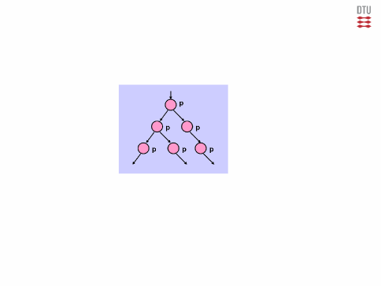
P is possible
a
P is true in some reachable state:
For some paths, finally P:
CTL: EF p
UPPAAL: E<> p F is written <>
15 DTU Compute, Technical University of Denmark Computation Tree Logic and UPPAALs query language MRH 02/09/2023
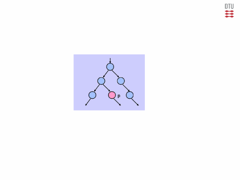
P holds inevitable
P is always true eventually: a
For every paths, finally P:
CTL: AF p
UPPAAL: A<> p
16 DTU Compute, Technical University of Denmark Computation Tree Logic and UPPAALs query language MRH 02/09/2023
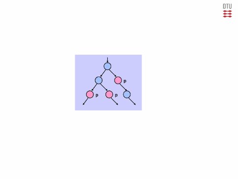
P holds potentially always
It is possible that P is always true: a
For some paths, globally P:
CTL: EG p
UPPAAL: E[] p
17 DTU Compute, Technical University of Denmark Computation Tree Logic and UPPAALs query language MRH 02/09/2023
P leads to Q
If P holds then eventually Q will hold a
For every paths, globally if P then inevitably Q:
CTL: AG (p ⇒ AFq)
UPPAAL: p --> q
18 DTU Compute, Technical University of Denmark Computation Tree Logic and UPPAALs query language MRH 02/09/2023
CTL and UPPAAL – informally
a
A network of timed automata has a continuous-time semantics, where states consist of pairs of process locations and clock evaluations. check last lecture
As a consequence
the next modalities AX and EX are not meaningful
the semantics of until modalities AU and EU must be reconsidered — we return to that later
We shall be more formal later about Timed CTL when we discuss model-checking algorithms.
19 DTU Compute, Technical University of Denmark Computation Tree Logic and UPPAALs query language MRH 02/09/2023

Queries in UPPAAL (1)– informally
a
A query in UPPAAL has one of the following forms:
A[] p
A<> p
E[] p
E<> p
p --> q
where p and q are state formulas.
A state formula is a side-effect free expression which can be checked in a state without considering behavior.
20 DTU Compute, Technical University of Denmark Computation Tree Logic and UPPAALs query language MRH 02/09/2023

State formulas in UPPAAL – informally
a
The following are examples of state formulas:
P.l – process P is in location l.
Guards, for example x <= 3 && y > 5 where x and y are clocks.
Formulas involving arithmetics, for example i1 + i2 + i3 > 7, where i1, i2, i3 are integer variables.
the formula deadlock
Boolean expressions, using for example negation, disjunction, conjunction and implication on state formulas.
For more details, please consult the UPPAAL tutorial
21 DTU Compute, Technical University of Denmark Computation Tree Logic and UPPAALs query language MRH 02/09/2023

Deadlock, Timelock and zeno-path
a
A state is a deadlock state if there are no outgoing action transitions neither from the state itself or any of its delay successors
A state contains a timelock if there is no time-divergent path starting from it.
A path is Zeno if it is time-convergent and it performs infinitely many discrete actions
Remember:
A path is time divergent when time growths towards infinity; otherwise it is time convergent
22 DTU Compute, Technical University of Denmark Computation Tree Logic and UPPAALs query language MRH 02/09/2023

Trick: Spotting Anomalies in Uppaal
Timelocks and Zeno paths represent typical modelling flaws: a
They should be avoided in the models.
Add a test automaton to the system:
where t is a new clock
Veryfy the liveness property: t==0 --> t==1
23 DTU Compute, Technical University of Denmark Computation Tree Logic and UPPAALs query language MRH 02/09/2023

Modelling with Timed Automata in UPPAAL
02224 Real-time Systems
February 22 2023
Hans Henrik Løvengreen
DTU Compute

Timed Autamata in UPPAAL (recap)
Advanced modelling in UPPAAL:
Urgent and committed locations
Urgent and broadcast channels
Variable reduction
Synchronous value passing
Atomicity
Urgent edges
Timers
Bounded liveness checking


A timed automaton in Uppaal is modelled using locations and edges between locations
A template may be used to declare a generic automaton that can be instantiated with a parameters list
A system consists of a network of timed automata: A1 || A2 ||…|| An, where Ai is a timed automaton
Two automata may communicate via synchronization channels or via global variables
x <= 3
a! a?
L0 x := 0
L1 L2
i := 4 L3


L0
x <= 3
a!
Location invariants
x := 0
i := 4
clock natural number
Clock assignment
and
Channel synchronization
Data assignment
x > 1
Guards
L1
Expr ::= i | n | i[Expr]
| −Expr || Expr ⊗ Expr
| (gd ? Expr : Expr)
⊗∈{+,−,*, /}
g ::= gc | gd | g, g
gc ::= x n| x y + n gd ::= Expr op Expr
∈{<, <=, =, >=, >}
op ∈{<, <=, =, >=, >,!=}
i := Expr
Chan ::= a!| a ?
x := n
inv ::= x < n | x ≤ n|inv, inv
UPPAAL 3

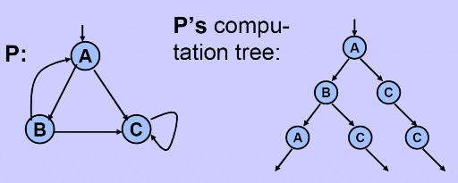

A subset of Timed Computation Tree Logic (TCTL)
Formulae refer to the computation tree of the system
Example:
UPPAAL
6

Reachability properties:
Something good will possibly happen
“Does p hold in some state along some path?”
Safety properties:
Something bad will never happen
“Does p hold in all states along all paths?”
Liveness properties:
Something good will eventually happen
“Does p hold in some state along all paths?”

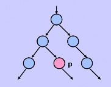
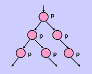

A[] p – p is invariant
p is true in all reachable states
E<> p – p is reachable
It is possible to reach a state in which p is satisfied
p is true in (at least) one reachable state
A[] p = ¬ E<> ¬p
UPPAAL
8

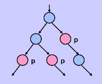
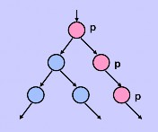
A<> p – p will inevitably become true
The system is guaranteed to eventually reach a state in which p is true
p is true in some state of all paths
E[] p – p is potentially always true
There exists a path in which p is true in all states
A<> p = ¬ E[] ¬p

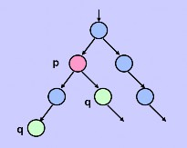

p --> q – if p becomes true then q will inevitably become true
In all paths, if p becomes true, q will inevitably become true
p --> q = A[] (p imply A<> q)
UPPAAL
10

We want to model a simple media M that receives packages on channel a and immediately sends them on channel b:
P models the media using the clock x
Q models the media using an urgent location and has the same behavior
Informal Semantics: There will be no delay in an urgent location
Note: Urgent locations reduce the number of clocks, and thus simplifies the analysis
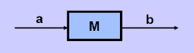
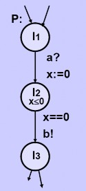
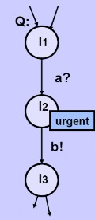
We want to model a process P that simultaneously sends messages a and b to two receiving processes when i=0
P’ sends messages at the same time, but in location n, another automaton (e.g., Q) may interfere:
Solution: mark n as committed instead of urgent
Informal semantics: There will be no delay in committed location, and the next transition must involve an automaton in a committed location
Note: committed locations reduce the number of clocks, and simplifies the analysis
UPPAAL 14
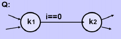

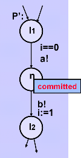

Difference:
In a committed location, an out-going transition must be taken before anything non-committed can happen
In an urgent location, anything can happen as long as it takes no time
A location cannot be declared both urgent and committed
An committed location is implicitly urgent

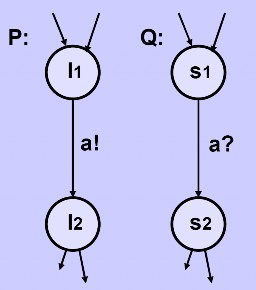

Suppose the two edges in automata P and Q should be taken as soon as possible
That is, as soon as both automata are in locations l1 and s1
How to model with invariants if either one may reach l1 or s1 first?
Solution: Declare the channel as
urgent
Informal Semantics:
There will be no delay if an edge with a synchronization over an urgent channel can be taken
Restrictions:
No clock guard allowed on edges with urgent actions
Invariants and data-variable guards are allowed
UPPAAL
17

Assume i is a data variable
We want P to take the transition from l1 to l2 as soon as i==5
Solution: We add extra automaton Q, and an urgent channel go which forces P to take the edge:
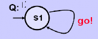
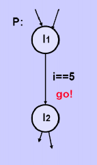


A channel a can be declared as a broadcast channel to allow the sender to synchronize with more than one receiver
If a is a broadcast channel, then a set of edges in different processes can synchronize if one is emitting (a!) and the others are receiving (a?)
A process can always emit (a!) on a broadcast channel without any receivers (a?)
UPPAAL
19

Assume i is a data variable
We want P to take the transition from l1 to l2 as soon as i==5
Solution: We add an urgent broadcast channel go which forces P to take the edge:


Variable reduction
Synchronous value passing
Atomicity
Urgent edges
Timers
Bounded liveness checking
UPPAAL
21

Reduce the size of the state space by explicitly resetting variables when they are not used, thus speeding up the verification
Idea: Reset a variable v to the initial value on all incoming edges of a location l, if v is inactive in l (i.e., v will be reset on any path from l before used again)
UPPAAL automatically performs this optimization for all clock variables (this option is called active clock reduction)


Synchronously pass data between processes
Idea: synchronize over shared binary channel and exchange data via shared variables
UPPAAL evaluates the assignment of the sending synchronization first, so the sender can assign a value to the shared variable which the receiver can then access directly
Four types: one-way or two-way, unconditional or conditional (i.e., receiver may reject)
UPPAAL
23

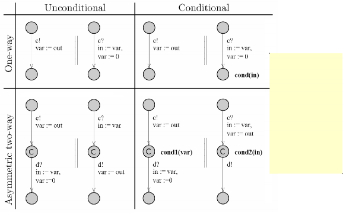
Guard are evaluated before Assignments are executed, so conditions are added as location invariants.


Reduce the size of the state space by reducing unnecessary interleavings, thus speeding up the verification
Idea: Use committed locations
UPPAAL uses an asynchronous execution model, i.e., edges from different automata can interleave, and UPPAAL will explore all possible interleavings
See for example the IntQueue from the train gate model
UPPAAL
25

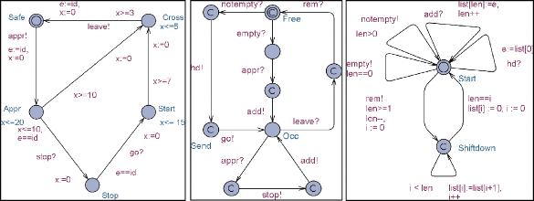

Train( int[0,N] e; const id ) Gate
IntQueue( int[0,N] e )
// Global declarations:
const N 5; // # trains + 1 chan appr, stop, go, leave;
chan empty, notempty, hd, add, rem;
// Local declarations
// IntQueue declarations int[0,N] list[N], len, i;
// Train declarations: clock x;

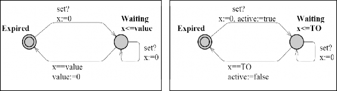

Emulate a timer where, in principle, time decreases until it reaches zero, at which point the timer is said to time-out
Idea: Add extra automaton with the channel set and the integer value
Timer with variable time-out
Timer with constant time-out
UPPAAL
28

Check bounded liveness properties:
A property is guaranteed to hold within some specified upper time-limit
p --><=t q
In TCTL corresponds to AG (p ⇒ AF≤t q)
Idea 1 (reduce to unbounded leads-to):
Add a clock z
Whenever p starts to hold, reset z
Check that p --> (q and z ≤ t)
Idea 2 (reduce to safety property):
Add a clock z
Add a Boolean variable b
Whenever p starts to hold, set b to true and reset z
Whenever q starts to hold, set b to false
Check that A[] (b imply z ≤ t)
Model Checking CTL and TCTL
Michael R. Hansen
1 DTU Compute, Technical University of Denmark Model Checking CTL and TCTL MRH 27/02/2023
The model checking problem
A model checking problem has the form:
M |= φ? a
where
M is typically an operational system model, e.g. given by a network of timed automata
φ is a formula in a logic for expressing requirements unambiguously in a declarative manner
The answer to the questions is YES if every behavior of M satisfies
φ, and otherwise NO.
Model checking provides guarantees
Here we shall use Computation Tree Logic (CTL) and the Timed version Timed CTL for expressing requirements.
2 DTU Compute, Technical University of Denmark Model Checking CTL and TCTL MRH 27/02/2023

Syntax of CTL
The syntax of CTL is described by the grammar:
a
φ, ψ :: − a | ¬φ | φ ∧ ψ | φ ∨ ψ | φ ⇒ ψ (propositional fragment)
| EXφ | AXφ | EFφ | AFφ | EGφ | AGφ | φEUψ | φAUψ
where a ∈ ap is an atomic proposition.
The modalities are obtained by combining
path quantifiers:
A (all) means for all path originating in the current state, and
E (exists) means for some part originating in the current state.
temporal operators F, G, X and U are interpreted on a path:
F φ (finally) means for some state on the path: φ,
G φ (globally) means for all states on the path: φ,
X φ(next) means the next state on the path: φ, and
φ U ψ (until) means that ψ holds for some state sj on the path, and
φ holds for all previous states si , i < j on that path.
3 DTU Compute, Technical University of Denmark Model Checking CTL and TCTL MRH 27/02/2023

Examples
a
It is possible that the lamp is never on: EG ¬on.
The system never deadlocks: AG ¬deadlock.
It is always possible to restart: AG EF restart.
The system always eventually breaks, but is functions until then:
work AU break.
4 DTU Compute, Technical University of Denmark Model Checking CTL and TCTL MRH 27/02/2023

Semantics
a
CTL formulas are interpreted over Kripke structures (or automata)
K = (V, E, L, I), where
V is a finite set of vertices (or states).
E ⊆ V × V is the transitions. If (v, v ′) ∈ E , then state v has v ′
as a successor state
L : V → 2AP is a labelling function. If L(v ) = {a1, . . . , am}, then each atomic proposition ai (for 1 ≤ i ≤ m) holds in state v .
I ⊆ V is a set of initial states
A path π of K = (V, E, L, I) is an infinite sequence of states:
π = s0s1 · · · si si+1 · · · such that (si , si+1) ∈ E, i ≥ 0.
For any path π = s0s1 · · · si si+1 · · · , let πk = sk for k ≥ 0.
5 DTU Compute, Technical University of Denmark Model Checking CTL and TCTL MRH 27/02/2023

Example: Kripke structure – initial states are left out
{r} {}
0 1 a
{p,q,r} 2
{p}
3
4
{q}
5
{p,r}
{q,r} 6
7 {p,q}
The formula
EF((p ⇔ r ) ∧ ¬(p ⇔ q))
holds in the following states: {0, 1, 4, 5} WHY?
6 DTU Compute, Technical University of Denmark Model Checking CTL and TCTL MRH 27/02/2023
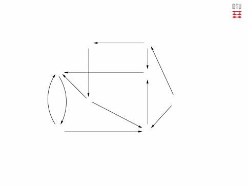
CTL Model checking: basic idea
Given Kripke structure: K = (V, E, L, I) and formula φ, we want to determine the set of states
a
Sat(φ) ⊆ V
where φ is true.
The algorithm follows the structure of φ working bottom-up:
Find Sat(a) for every atomic propositions a occurring in φ.
Find Sat(ψ1) for every subformula ψ1 of φ containing precisely one operator.
Find Sat(ψ2) for every subformula ψ2 of φ containing precisely two operators.
· · ·
Find Sat(φ) on the basis of knowing Sat(ψ), for each immediate subfurmula ψ of φ.
Remember that it suffices to consider a small adequate set of operators, such as ¬, ∧, EX, AF, EU.
7 DTU Compute, Technical University of Denmark Model Checking CTL and TCTL MRH 27/02/2023

CTL Model checking: Propositional part
a
Sat(a) | = | {s ∈ V | a ∈ L(s)} |
Sat(¬φ) | = | V \ Sat(φ) |
Sat(φ ∧ ψ) | = | Sat(φ) ∩ Sat(ψ) |
8 DTU Compute, Technical University of Denmark Model Checking CTL and TCTL MRH 27/02/2023

Example: Propositional part
{r} {}
0 1
a
{p,q,r} 2
{p}
3
4
{q}
5
{p,r}
{q,r} 6
7 {p,q}
Sat(p ⇔ q) = {0, 1, 2, 7}
Sat(p ⇔ r ) = {1, 2, 4, 5}
Sat(¬(p ⇔ q)) = {3, 4, 5, 6}
Sat((p ⇔ r ) ∧ ¬(p ⇔ q)) = Sat(p ⇔ r ) ∩ Sat(¬(p ⇔ q)) = {4, 5}
9 DTU Compute, Technical University of Denmark Model Checking CTL and TCTL MRH 27/02/2023
CTL Model checking: EX φ
a
Sat(EX φ) = {s ∈ V | s has a successor in Sat(φ)}
10 DTU Compute, Technical University of Denmark Model Checking CTL and TCTL MRH 27/02/2023
CTL Model checking: AF φ
a
Sat(AF φ) can be found by a marking algorithm:
Mark all states in Sat(φ)
Repeat
if an unmarked state s ∈ V has all its successors marked, then mark s
until no new marked state is found.
11 DTU Compute, Technical University of Denmark Model Checking CTL and TCTL MRH 27/02/2023

CTL Model checking: φ EU ψ
a
Sat(φ EU ψ) can be found by a marking algorithm:
Mark all states in Sat(ψ)
Repeat
if an unmarked state s ∈ Sat(φ) has a successor marked, then mark s
until no new marked state is found.
12 DTU Compute, Technical University of Denmark Model Checking CTL and TCTL MRH 27/02/2023

Example: Modality part
{r} {}
0 1 a
{p,q,r} 2
{p}
3
4
{q}
5
{p,r}
{q,r} 6
7 {p,q}
Sat((p ⇔ r ) ∧ ¬(p ⇔ q)) = {4, 5}
Sat(EF ((p ⇔ r ) ∧ ¬(p ⇔ q))) = {4, 5, 0, 1}
13 DTU Compute, Technical University of Denmark Model Checking CTL and TCTL MRH 27/02/2023
Result
a
It is decidable whether a Kripke K = (V, E, L, I) satisfies a CTL formula φ.
Complexity of decision procedure: O(|φ| · (|V | + |E |)).
The size of the Kripke structure is, however, exponential in the number of parallel components.
14 DTU Compute, Technical University of Denmark Model Checking CTL and TCTL MRH 27/02/2023
Timed CTL: informally
The syntax for Timed CLT is obtained from the CTL syntax by
a
deletion of EX φ and AX φ formulas,
allowing clock constraints α as atomic formulas, and
adding a freeze quantifier z in φ, where z is a clock called the freeze identifier.
A formula z in φ is true is a state s iff φ is true in s for z = 0.
A TCTL formula is interpreted over a timed transition system (see Lecture 2) for a timed automaton, where a state has the form (l, v )
l is a timed-automaton location, and
v is a clock evaluation and a transition can be a
delay transition of the form (l, v
d
) −→ (
l, v + d ), or a
discrete transition of the form (l, v ) −→ (l′, v ′)
15 DTU Compute, Technical University of Denmark Model Checking CTL and TCTL MRH 27/02/2023

Example: φ AU≤k ψ
z in (p AU (z ≤ 7 ∧ q)) also written p AU≤7 q a
p holds continuously until q holds within 7 time units for all paths:
16 DTU Compute, Technical University of Denmark Model Checking CTL and TCTL MRH 27/02/2023
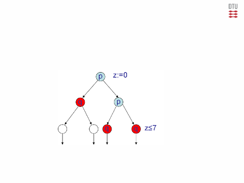
Example: EF<k ψ
z in EF (z < 5 ∧ p)) also written EF<5 p a
p becomes true within 5 time units along some path:
17 DTU Compute, Technical University of Denmark Model Checking CTL and TCTL MRH 27/02/2023
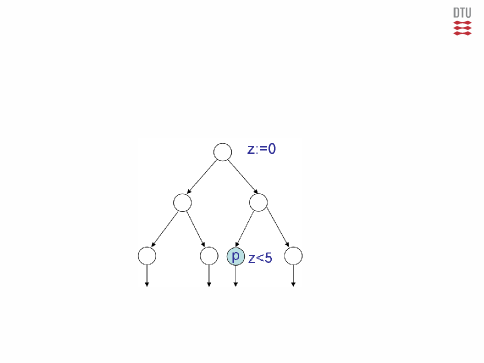
Further examples
a
The light is always off for at least 2 minutes: (off AU x ≥ 2)
The light is sometimes off for at least 3 minutes: (off EU x ≥ 3)
If the light is on, it will inevitably switch off within 9 seconds:
AG (on ⇒ AF≤9off)
18 DTU Compute, Technical University of Denmark Model Checking CTL and TCTL MRH 27/02/2023
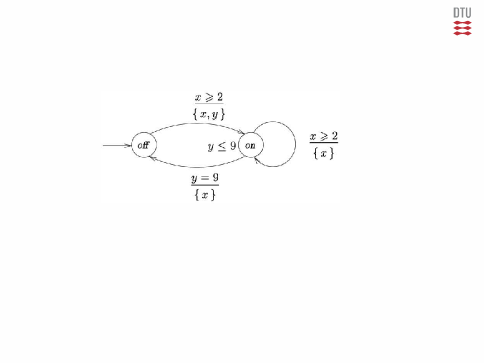
Model checking for TCTL
a
A timed transition system has infinitely (even uncountably) many states due to the clock evaluations.
Is model checking possible for timed automata?
Yes. Alur and Dill (in the early 90ties) showed how to partition the infinite number of clock evaluations into a finite collection of equivalence classes having the following property:
Equivalent clock evaluations satisfy the same TCTL formulas
19 DTU Compute, Technical University of Denmark Model Checking CTL and TCTL MRH 27/02/2023

Some observations
a
Notation:
1 Let ⌊r ⌋, for r ∈ R, denote the largest integer that is at most r
2 Let frac(r ) = r − ⌊r ⌋ denote the fractional part of r
Observe
Atomic clock constraints compare clocks with natural numbers
e.g. x < c
v |= x < c iff ⌊v (x )⌋ < c — the fractional part is not relevant.
v |= x ≤ c iff either ⌊v (x )⌋ < c or ⌊v (x )⌋ = c and frac(v (x )) = 0
— the fractional part is not relevant.
v |= g depends just on the integer part on clock values and on whether fractional parts are 0.
20 DTU Compute, Technical University of Denmark Model Checking CTL and TCTL MRH 27/02/2023
Clock equivalence
Let A be a timed automaton, cx be the largest value the clock x is compared to, and v and v ′ clock evaluations.
a
v and v ′ are clock equivalent (written v ≈ v ′) iff
′
′
1 for each clock x we have that either both v (x ) and v (x ) are greater than cx or
⌊v (x )⌋ = ⌊v (x )⌋
2 for each clock x with v (x ) ≤ cx we have
frac(v (x )) = 0 iff frac(v ′(x )) = 0
and
3 for all clocks x, y with v (x ) ≤ cx and v (y ) ≤ cy we have
frac(v (x )) ≤ frac(v (y )) iff frac(v ′(x ) ≤ frac(v ′(y ))
21 DTU Compute, Technical University of Denmark Model Checking CTL and TCTL MRH 27/02/2023
Example: Clock regions
a
This simple automaton has 6 clock regions (equivalence classes):
[x = 0], [0 < x < 1], [x = 1], [1 < x < 2], [x = 2], [x > 2]
22 DTU Compute, Technical University of Denmark Model Checking CTL and TCTL MRH 27/02/2023
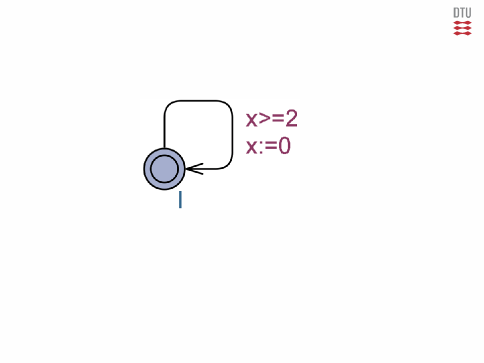
Example: Geometric interpretation of clock regions
a
There are 60 regions:
12 closed areas
6 open areas
7 open line segments
23 closed line segments
12 corner points
23 DTU Compute, Technical University of Denmark Model Checking CTL and TCTL MRH 27/02/2023
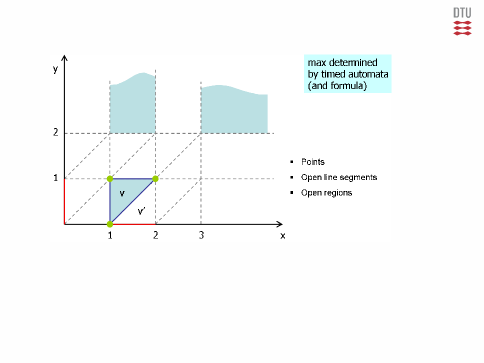
Example: Region automaton
a
In the region automaton a state has the form (l, [v ]), where
l is a timed-automaton location and
[v ] is a clock equivalence class
24 DTU Compute, Technical University of Denmark Model Checking CTL and TCTL MRH 27/02/2023
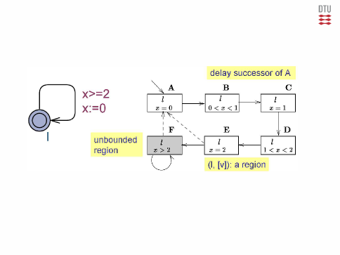
Result
A region automaton has a finite number of states.
a
It is decidable whether a timed automaton satisfies a TCTL formula
The complexity of the decision procedure is exponential in the number of clocks and in
the constants mentioned in clock constraints.
The symbolic states of Uppaal are based on Zones rather that regions.
A zone is defined by a conjunction of formulas of the form:
x ⊲⊳ c or x − y ⊲⊳ c
where ⊲⊳∈ {<, ≤, =≥, >}.
A zone-based representation is typically much more compact that a region-based one.
25 DTU Compute, Technical University of Denmark Model Checking CTL and TCTL MRH 27/02/2023

Uppaal Verification Options
a
Search order: Breadth first or Depth first
State Space Reduction: None, Conservative, Aggressive
State Space Representation: DBM, Compact, Under approximation, Over approximation
26 DTU Compute, Technical University of Denmark Model Checking CTL and TCTL MRH 27/02/2023
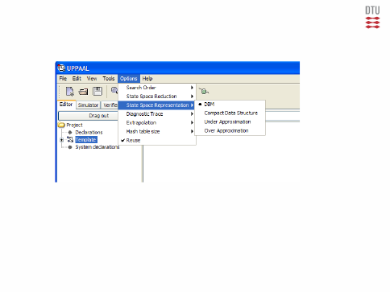
Basic Notions
Hans Henrik Løvengreen
DTU Compute, Technical University of Denmark

Given
A number of activities (tasks, jobs) to be done Each may be one-instance or recurrent
A number of resources to be utilized
A specification of the resources needed for each task
A schedule is a mapping over time between tasks and resources consistent with the specification.
Scheduling is the process of determining a schedule
Scheduling is done by a scheduler according to a policy
Scheduling may be static (planning) or dynamic

Activity Types
Batch activities — High CPU/IO ratio
Interactive activities — Low CPU/IO ratio
Real-time activities — deadlines, timeliness Goals
Fairness — every process/user/client get a fair share
Good utilization — no resource is unnecessarily idle
High throughput
Acceptable response times
Deadlines must be met

Real-time Programs
A real-time program is a reactive program with real-time requirements.
Real-time requirements may be hard, firm, or soft. Real-Time Scheduling
Given a real-time program, the scheduling problem is to ensure that the (hard) real-time requirements are met given a limited number of HW resources
Traditionally, mostly CPU-resources have been considered.
Other resources may also be considered: Communication bandwith, power consumption . . .

Schedulability
Real-time requirements can usually be stated as deadlines
A feasible schedule is a schedule which meets the deadlines Scheme
A scheduling scheme consists of:
A scheduling policy determining the possible schedules
A schedulability test ensuring that all schedules are feasible
A test may be sufficient and/or necessary
A test is sustainable if improving conditions preserves feasability Optimality
A scheduling policy is optimal (for a given class of scheduling problems)
iff it can find a feasible schedule, whenever one exists

An arbitrary program is too complex to analyse.
To facilitate analysis, an abstract execution model is used:
The program consists of a fixed number N of computational tasks
•
Tasks are recurrent: loop
await next release compute task respond
Tasks are released periodically with fixed periods Ti
Tasks have fixed worst-case execution times Ci
Tasks have fixed response deadlines Di (Ci ≤ Di ≤ Ti )
Tasks may have fixed start times (offsets) Si (Si ≥ 0)

No aperiodic tasks
Tasks must run within their period: Di = Ti
No sharing of resources other resources than CPU(s)
No precedence relation
No assumption on start times
►
►
►
Tasks have no suspension points
Overheads (context switch, scheduling, . . . ) are ignored
Only a execution on a single CPU resource is considered
Tasks are assumed to be independent:

Very difficult to adapt to task modifications
Cannot utilize spare time for other activities
Not amendable for multi-processing
The schedule is executed by a single cyclic executive driven by a regular
hardware tick.
Properties
+ Simple implementation not requiring an operating system
Idea
A feasible, repeatable schedule is determined statically.
Cyclic | Executive | |||||||||||||
Task | T | C | ||||||||||||
a | 25 | 10 | ||||||||||||
b | 25 | 8 | ||||||||||||
c | 50 | 5 | ||||||||||||
d | 50 | 4 | ||||||||||||
e | 100 | 2 | ||||||||||||
a b c a b c a b d | ||||||||||||||
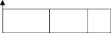
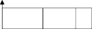

Fair scheduling not suited for hard real-time
Priorities may be fixed or dynamic.
Fair scheduling, e.g. round robin time-sharing
Priority based scheduling
►
►
General policies:
OS.
A task may be ready or waiting.
A scheduler dynamically chooses a ready task for execution
Tasks are performed repeatedly by dedicated threads scheduled by an
a | b | d | e |

Ready tasks are executed in time slots in a cyclic way
Example time slot = 2.0
T C
Deadline missed
2 1
5 2
0
1
2
3
4
5
6
7
8
9
Time
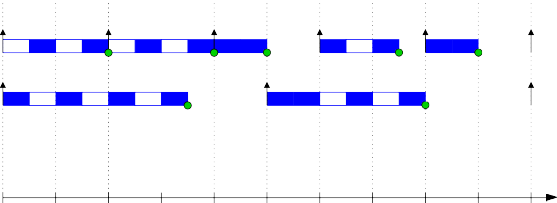

Ready thrads are executed in time slots in a cyclic way
Example time slot = 0.5
T C
2 1
5 2

Idea: Assign fixed priorities to tasks
Scheduler needs to know about priorities (only)
Always choose highest priority task when rescheduling
Scheduling points:
Non-preemptive scheduling: Let current task run till completion
Periodic scheduling: Schedule at periodic intervals
Deferred scheduling: Schedule after a given time
Preemptive scheduling: Preempt current task if higher prioritized task becomes ready
How should equal priority tasks be treated?
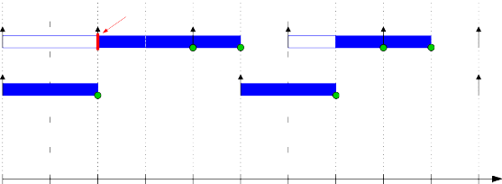

Example
T C
LOW
2 1
Deadline missed
5 2
HIGH
What is the best way of assigning priorities?


Example
T C
HIGH
2 1
5 2
LOW
0
1
2
3
4
5
6
7
8
9
Time

Optimal for the simple scheduling problem:
If a set of tasks is schedulable for some fixed priority assignment, then:
The set of tasks is schedulable using rate-monotonic priority assignment.
A rate-monotonic priority assignment (RMA) satisfies:
Ti < Tj ⇒ Pi > Pj
T | C |
3 | 1 |
4 | 1 |
5 | 1 |
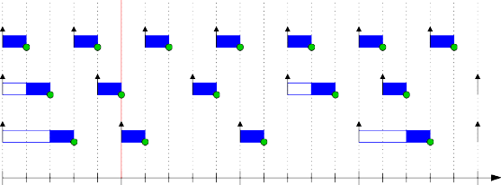

RMA Example
0
5
10
15
Time
Feasible if all deadlines met from critical instant till longest period

How high can we go while ensuring schedulability?
≤ 1
Ti
i =1
i
C
I:
For a set of tasks running on a single CPU:
N
i
T
Ui =
The processor utilization (load) contributed by task i :
Ci

In 1973, Liu and Layland showed a sufficient condition for schedulability (using rate-monotonic priority assignment):
I:
Ci
N
−
< N(21/N 1)
Ti
i =1
For various N this gives:
Bound sometimes too pessimistic
N Utilization (%)
1 100.0
2 82.8
3 78.0
4 75.7
10 71.8
∞ 69.3 (ln 2)


√
(1/3 + 1) · (1/4 + 1) · (1/5 + 1) = (4 · 5 · 6)/(3 · 4 · 5) = 2
Example
Consider again: Task T C
3 1
4 1
5 1
+ 1 ≤ 2
i
T
i
C
i =1
N
Y
In 2006, Bini et.al. showed an alternative sufficent condition:
Refinement: N = number of task families (having harmonic periods)
Response Time Analysis | |||||||
Example | |||||||
C | R 0 | R 1 | R 2 | R 3 | . . . | ||
a 50 | 10 | 10 | 10 | ||||
b 70 | 15 | 15 | 25 | 25 | |||
c 110 | 40 | 40 | 65 | 75 | 90 | 90 | |
d 200 | 30 | 30 | 95 | 120 | 170 | 195 | 195 |
T

Ri can be found by an iterative process.
j
T
j∈hp(i )
Cj
k
i
R
I:
= Ci +
k+1
Ri
Idea
Assume some priority assignment given.
Calculate worst-case response time Ri for each task.
If Ri ≤ Ti for all i , the tasks are schedulable.
The response time satisfies:

Some tasks may require Di < Ti
If Ri ≤ Di for all processes, all deadlines are met
A deadline monotonic priority assignment satisfies:
Di < Dj ⇒ Pi > Pj
Deadline monotonic priority assignment is optimal for independent processes
Proof (sketch)
Given a feasible priority assignment W
Swap any two adjacent tasks with Pi > Pj but Di > Dj
When none left, assignment is feasible and deadline monotonic

task given a certain fraction of the processing time
Sporadic tasks often have Di < Ti (eg. alarms)
Alternatively, aperiodic and sporadic tasks may be handled by a server
Aperiodic tasks are released at arbitrary times by external or internal
events
Sporadic tasks have a minimum arrival time Ti
Sporadic tasks can be treated as periodic tasks with period Ti
Corrollary: RMA is optimal for Di = Ti

Idea: Base scheduling choice on current situation
Scheduler needs to be aware of more task parameters
Better exploitation of processor time Common Schemes
Least Completion Time (LCT)
Least Slack time (LST)
Earliest Deadline First (EDF)

Scheduler must know about and maintain deadlines
Performs poorly on overload Difficult to analyse response times
Difficult to analyse for non-preemptive processes
–
–
–
–
(for Di = Ti )
i
I:
+ Optimal algorithm: Feasible iff U ≤ 1
Principle
Always run tasks with first-coming deadline Properties
T | C |
3 | 1 |
4 | 1 |
5 | 2 |
T | C |
3 | 1 |
4 | 1 |
5 | 2 |
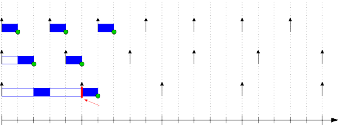

Example FPS
Deadline missed
0
5
10
15
Time

Example EDF
0
5
10
15
Time
Further Notions
Hans Henrik Løvengreen
DTU Compute, Technical University of Denmark

6. Tools for Schedulability Analysis
5. Scheduling Wrap-up
4. Multi-processor Scheduling
3. Extended RTA for FPS
2. Task Interaction
1. Basic Notions Recap

Dynamic Priority Scheduling
Typical: Earliest Deadline First (up to U = 100%)
Tj
j∈hp(i )
j
C
i
i
R
L
= C +
i
R
Response time analysis:
Ti
i =1
< N(21/N − 1)
i
C
L
Utilization check:
Exectution Model
N independent, periodic tasks
Task parameters: (Ti , Ci , Di , . . . ) Fixed Priority Scheduling
N

A deadline monotonic priority assignment satisfies:
Di < Dj ⇒ Pi > Pj
Deadline monotonic priority assignment is optimal for independent processes
Proof (sketch)
Given a feasible priority assignment W
Swap any two adjacent tasks with Pi > Pj but Di > Dj
When none left, assignment is feasible and deadline monotonic
Corrollary: RMA is optimal for Di = Ti


Ti
Di
Ri
Ci
I>i
i
ti
Tj
Dj
Rj
I i
j
Cj
Ij >i
tj

Ti
Di
Tj
Dj
Rj
I i
j
Cj
Ij >i
tj
Ci
I tj
i
I t>i
i
ti
Rt
i
Ti
Di
Tj
Dj
Rt
j
Cj
I t>i
j
tj
Ci
I tj
i
I t>i
i
ti
Rt
i

6. Tools for Schedulability Analysis
5. Scheduling Wrap-up
4. Multi-processor Scheduling
3. Extended RTA for FPS
2. Task Interaction
1. Basic Notions Recap

Tasks may share data and other resources
Tasks may depend on conditions set by other tasks
►
►
Basic scheduling theory assumes that tasks are independent.
In practice tasks cooperate or compete:

Assumptions
Tasks interact by shared variables protected by critical regions (eg. monitors).
Access to critical regions is strictly by priority. Impact of interaction
A high priority task may be blocked by requesting access to a critical region held by a lower priority task.
Let Bi be the maximum blocking time task i may be blocked by lower priority tasks.
Blocking time contributes to the response time:
R = C + B + L
Ri C
i i i
Tj j
j∈hp(i )


Problem
t1
t2
t3
Time
Priority inversion occurs when a high priority task is indirectly blocked
by a runnable low priority tasks.
Famous example: Mars Pathfinder Base station (1997).

Priority Inheritance
Attempt to eliminate blocking and priority inversion by priority propagation.
Standard algorithm: Priority boosted when blocking.
Still allows for transitive and accumulated blocking.
Priority ceiling protocols reduces blocking even further.


Each task has a static base priority.
The dynamic priority of a task is raised whenever a task blocks a task with a higher (dynamic) priority.
With inheritance:
t1
t2
t3
Time

Each task has a static base priority.
Each critical region has a static ceiling priority being the maximum base priority of any task using it (+1).
The dynamic priority of a task is the maximum of its base priority and the ceiling priorities of any critical regions it holds.
Properties
A task can be blocked by at most by one lower priority task.
Transitive blocking is prevented.
Mutual exclusion in ensured (on mono-processors).
Deadlock is prevented (on mono-processors).

Example
Basic inheritance:
t1
t2
t3
Time

Example
Immediate priority ceiling:
t1
t2
t3
Time

Sha, Rajkumar & Lehoczky 1990. Principle
Each task has a static base priority.
Each critical region has a static ceiling priority being the maximum base priority of any task using it (+1).
The dynamic priority of a task t is the maximum of its base priority and the priority of any task that is blocked by t.
A task can enter a critical region if its dynamic priority is greater than the ceiling priority of any region occupied by other tasks.

Compared to Immediate Ceiling Protocol:
Same worst case performance.
Often better average response times.
Same freedom from deadlock.
Much more complex to implement.
Otherwise the task is said to be blocked by the task occupying the region with the highest ceiling priority.

6. Tools for Schedulability Analysis
5. Scheduling Wrap-up
4. Multi-processor Scheduling
3. Extended RTA for FPS
2. Task Interaction
1. Basic Notions Recap

= Ri + Ji
i
R∗
Response time wrt. ideal release is given by:
j∈hp(i )
j
C
j
i
Tj
R + J
L
i
i
= C + B +
i
R
Derivations from periodical behaviour is called jitter.
The release jitter Ji may be seen as a potential delay of the actual release wrt. ideal release.
May be caused by timer granularity.
Release jitter may be incorporated in the response calculation:

t1 Restore context
t2
Idle
Save context
Time


t1
t2
Idle
Time
CCS = Csave + Crestore
Use
C = C + 2C
∗
∆
i
i
CS
instead of Ci

Interrupts
Timer interrupts typically release periodic tasks
Other interrupts typically release aperiodic tasks
Interrupt service routines may be considered high priority tasks
Nested interrupt handling corresponds to preemption

Tasks may have phases with different requirements
Tasks may have to synchronize and communicate
Tasks may release other tasks Subtasks
A subtask represents a unit of computation
Subtasks may have more or less elaborate precedence constraints
Different priorities may be assigned to related subtasks
Standard analysis can accomodate some constraints
Often ad hoc analysis necessary

The FPS response time analysis may incorporate:
Arbitrary deadlines (Di > Ti )
Cooperative scheduling
Offsets

6. Tools for Schedulability Analysis
5. Scheduling Wrap-up
4. Multi-processor Scheduling
3. Extended RTA for FPS
2. Task Interaction
1. Basic Notions Recap
Classical theory adresses only a single CPU
Multi-processors (multi-cores) have become standard
Allow for global scheduling, aka. symmetrical multiprocessing (SMP) Issues of Multi-processor Scheduling
Mono-processor policies like RMA and EDF no longer optimal
Scheduling anomalies may occur
Global scheduling in general hard to analyze
Conclusion: SMP not suited for hard real-time
Typical alternative approach — partitioned scheduling:
Assign tasks to processors

RMA
T C
4 2
4 2
5 3
Deadline missed
0
5
10
15
Time
Use local scheduling on each processing node

Inverse RMA
T C
4 2
4 2
5 3
0
5
10
15
Time

Many larger systems have a mixture of hard, firm and soft tasks
Can be handled by running multiple schedulers Some Approaches
Separate bandwidth preserving server to handle aperiodic tasks
Running soft real-time tasks in low-priority task (RT Linux)
General two-level scheduling
Processor virtualization

6. Tools for Schedulability Analysis
5. Scheduling Wrap-up
4. Multi-processor Scheduling
3. Extended RTA for FPS
2. Task Interaction
1. Basic Notions Recap

Safe approach: Use a simple processor anno 1980.
Research: Design processor for low WCET
Caching
Pipelining Multiprocessing
►
►
►
Ci is essential for schedulability analysis!
Can be measured or calculated
Both approaches are tedious and error-prone
Analysis tools are emerging
Obstacles with modern processors:

Scheduling theory was initiated in the 1970’ies
— but forgotten again until the 1990’ies
Theory focusses on hard real-time properties (worst-case)
Not much knowledge or usage within profession
UML-based analysis tools may change best practice
Limited to simple periodic tasks and deadlines.
A real-time operating system should provide:
fixed priorities + inheritance
For soft real-time systems, a lot of performance theory exists
Focus on average end-to-end properties and quality of service

6. Tools for Schedulability Analysis
5. Scheduling Wrap-up
4. Multi-processor Scheduling
3. Extended RTA for FPS
2. Task Interaction
1. Basic Notions Recap
General OS try to improve their (soft) real-time properties

Academic Tools
Times from the UPPAAL-group
MAST from Cantabria University (Spain)
Cheddar from University of Brest (France) Commercial Tools
TimesWiz from TimeSys
RAPID RMA from TriPac
Integrated with UML-based IDEs like Rational Rose and Rhapsody
May use the UML 2.0 schedulability profile, or the later

Task are characterized by the parameters C, D, . . .
They may be released by arbitrary timed automata:
MARTE (Modelling and Analysis of Real-Time Embeddded Systems)

Released tasks interact with a scheduler automaton using a given policy:


Each tasks has an clock ci of accumulated computation time
For a preemption of Cj units, clock adjustment preserves regions:
UPPAAL 4.1 introduces stopwatches
In a location a clock x either runs xi = 1 or is stopped xi = 0
By default, all clocks run in a location
Stopwathces render the verification undecidable
Using overapproximation properties may still be verified
Stopwatches may naturally model preemption of tasks
A general scheme utilizing this is described in:
David, Illum, Larsen, Skou: Model-based Framework for Schedulability Analysis Using Uppaal 4.1, 2009
Exists as SchedulingFramework.xml in the demo folder

Developed at the University of Brest 2002–
Available at beru.univ-brest.fr/cheddar
Model: Multiple tasks scheduled on processors with multiple cores
May do some static analysis, but is basically a simulation tool
Supports the system definition langauge AADL
Implemented in Ada (and supports Ada RT notions)
Integrated in both UML-based and AADL-based tools
02224 Modelling and analysis of real-time
systems Ha
Overview of Uppaal SMC
Michael R. Hansen
Ha
Stochastic semantics of networks of timed automata
Query language
Modelling tricks (see tutorial)
Ha
Component Timed Automata:
input-enabled and deterministic
discrete probabilistic choice
disjoint set of output actions
uniform distributions – bounded delay
exponential distributions – unbounded delays
Given a network of independent TA.
Semantics is give by a repeated race: Ha
All (relevant) components propose a delay and an output
Smallest delay is chosen
Broadcast of chosen output – synchronization with the TA that can receive
Uppaal SMC supports a powerful notion of cost that can capture, for example,
prices
stopwatches
ode – hybrid systems Have a look in the SMC tutorial
Forms: simulate N [ <= bound] {E1, .., Ek} Ha
simulate [ <= bound; N] {E1, .., Ek}
dependent of version
N is the number of simulations
bound is the time bound on the simulations
Ei is a state expression that is monitored
Remark: time bounds can be replaced by more general cost bounds or bounds on the number of discrete steps
Ha
Forms: Pr[<= bound] (<> BE) or Pr[<= bound] ([] BE)
bound is the time bound on the simulations
BE is a Boolean state expression
Remark: time bounds can be replaced by more general cost bounds or bounds on the number of discrete steps
Forms: Pr[<= bound](F) ≥ p or Pr[<= bound](F) ≤ p Ha
p is a probability
bound is the time bound on the simulations
F is a formula
Checks whether the hypothesis holds based on a computed number of simulation needed for a given significance level
Remark: time bounds can be replaced by more general cost bounds or bounds on the number of discrete steps
Forms: Pr[<= bound1](F1) ≥ Pr[<= bound2](F2) Ha
boundi is the time bound on the simulations
Fi is a formula
Checks whether the comparison holds based on a computed number of simulation needed for a given significance level
Remark: time bounds can be replaced by more general cost bounds or bounds on the number of discrete steps.
Forms: E[<= bound;N](min: expr) or Ha
E[<= bound;N](max: expr)
bound is the time bound on the simulations
N is the number of simulations
expr evaluates to a clock or integer value
Computes expected value of the min or max expression.
Remark: time bounds can be replaced by more general cost bounds or bounds on the number of discrete steps.
Forms: Pr F
F is a formula of Metric Interval Temporal Logic
Ha
Computes an approximation interval for the (unknown) probability based on a computed number of simulation needed for a given confidence
Formula F can have one of the forms:
Boolean state expression
(F1 ∧ F2)
(F1 ∨ F2)
(F1U[a, b]F2)
(F1R[a, b]F2)
(<>[a, b]F )
([ ][a, b]F2)
where a, b are natural numbers and a ≤ b

Timed Games, Controller Synthesis and UPPAAL-TIGA
Michael R. Hansen
Model Checking (M |= φ)
Ha
Given system model M and
a property φ,
check (automatically) whether the behaviours of M satisfy φ.
Controller Synthesis
Given environment model S,
a model C describing the moves the controller can do,
a property φ,
find a strategy Sc for the controller so that Sc S |= φ
or show there is not such strategy.
The right code is generated automatically
Model Checking (M |= φ)
Ha
Given system model M and
a property φ,
check (automatically) whether the behaviours of M satisfy φ.
Controller Synthesis
Given environment model S,
a model C describing the moves the controller can do,
a property φ,
find a strategy Sc for the controller so that Sc S |= φ
or show there is not such strategy.
The right code is generated automatically
3 DTU Compute, Technical University of Denmark Timed Games, Controller Synthesis and UPPAAL-TIGA MRH 03/28/2023
Model Checking (M |= φ)
Ha
Given system model M and
a property φ,
check (automatically) whether the behaviours of M satisfy φ.
Controller Synthesis
Given environment model S,
a model C describing the moves the controller can do,
a property φ,
find a strategy Sc for the controller so that Sc S |= φ
or show there is not such strategy.
The right code is generated automatically
Introduced by Maler, Phueli and Sifakis in 1995.
Controller continuously observes the system and can perform Ha
two actions
wait (that is, delay)
take a controllable move (thereby preventing delay)
A 2-player game:
Controller moves against uncontrollable environment moves
Reachability games: control : A <> Win, where Win is a state formula describing the winning states.
Safety games: control : A[ ] not Lose where Lose is a state formula describing the losing states of the controller.
Memoryless strategy: State → Action
Introduced by Maler, Phueli and Sifakis in 1995.
Controller continuously observes the system and can perform Ha
two actions
wait (that is, delay)
take a controllable move (thereby preventing delay)
A 2-player game:
Controller moves against uncontrollable environment moves
Reachability games: control : A <> Win, where Win is a state formula describing the winning states.
Safety games: control : A[ ] not Lose where Lose is a state formula describing the losing states of the controller.
Memoryless strategy: State → Action
Introduced by Maler, Phueli and Sifakis in 1995.
Controller continuously observes the system and can perform Ha
two actions
wait (that is, delay)
take a controllable move (thereby preventing delay)
A 2-player game:
Controller moves against uncontrollable environment moves
Reachability games: control : A <> Win, where Win is a state formula describing the winning states.
Safety games: control : A[ ] not Lose where Lose is a state formula describing the losing states of the controller.
Memoryless strategy: State → Action
Introduced by Maler, Phueli and Sifakis in 1995.
Controller continuously observes the system and can perform Ha
two actions
wait (that is, delay)
take a controllable move (thereby preventing delay)
A 2-player game:
Controller moves against uncontrollable environment moves
Reachability games: control : A <> Win, where Win is a state formula describing the winning states.
Safety games: control : A[ ] not Lose where Lose is a state formula describing the losing states of the controller.
Memoryless strategy: State → Action
Introduced by Maler, Phueli and Sifakis in 1995.
Controller continuously observes the system and can perform Ha
two actions
wait (that is, delay)
take a controllable move (thereby preventing delay)
A 2-player game:
Controller moves against uncontrollable environment moves
Reachability games: control : A <> Win, where Win is a state formula describing the winning states.
Safety games: control : A[ ] not Lose where Lose is a state formula describing the losing states of the controller.
Memoryless strategy: State → Action
Introduced by Maler, Phueli and Sifakis in 1995.
Controller continuously observes the system and can perform Ha
two actions
wait (that is, delay)
take a controllable move (thereby preventing delay)
A 2-player game:
Controller moves against uncontrollable environment moves
Reachability games: control : A <> Win, where Win is a state formula describing the winning states.
Safety games: control : A[ ] not Lose where Lose is a state formula describing the losing states of the controller.
Memoryless strategy: State → Action

Ha
Solid transitions are controlled
dashed are uncontrolled (environment) transitions
Priority to environment transitions
Reachability objective:
control : A <> goal
Control can, in a state, chose to wait (delay) or chose to take a controllable transition
Reachability and Safety Games are decidable. Memoryless and region-based strategies are sufficient. [AMS98]

Ha
Solid transitions are controlled
dashed are uncontrolled (environment) transitions
Priority to environment transitions
Reachability objective:
control : A <> goal
Control can, in a state, chose to wait (delay) or chose to take a controllable transition
Reachability and Safety Games are decidable. Memoryless and region-based strategies are sufficient. [AMS98]

Ha
Solid transitions are controlled
dashed are uncontrolled (environment) transitions
Priority to environment transitions
Reachability objective:
control : A <> goal
Control can, in a state, chose to wait (delay) or chose to take a controllable transition
Reachability and Safety Games are decidable. Memoryless and region-based strategies are sufficient. [AMS98]
Ha
Solid transitions are controlled
dashed are uncontrolled (environment) transitions
Priority to environment transitions
Reachability objective:
control : A <> goal
Control can, in a state, chose to wait (delay) or chose to take a controllable transition
Reachability and Safety Games are decidable. Memoryless and region-based strategies are sufficient. [AMS98]

Ha
Solid transitions are controlled
dashed are uncontrolled (environment) transitions
Priority to environment transitions
Reachability objective:
control : A <> goal
Control can, in a state, chose to wait (delay) or chose to take a controllable transition
Reachability and Safety Games are decidable. Memoryless and region-based strategies are sufficient. [AMS98]

Ha
Solid transitions are controlled
dashed are uncontrolled (environment) transitions
Priority to environment transitions
Reachability objective:
control : A <> goal
Control can, in a state, chose to wait (delay) or chose to take a controllable transition
Reachability and Safety Games are decidable. Memoryless and region-based strategies are sufficient. [AMS98]

Ha
Solid transitions are controlled
dashed are uncontrolled (environment) transitions
Priority to environment transitions
Reachability objective:
control : A <> goal
Control can, in a state, chose to wait (delay) or chose to take a controllable transition
Reachability and Safety Games are decidable. Memoryless and region-based strategies are sufficient. [AMS98]
Ha
L0 : { }
L1 : {x | 1 ≤ x}
L2 : {}
L3 : { }
Ha

L0 : { }
L1 : {x | 1 ≤ x}
L2 : {}
Ha

L0 : { }
L1 : {x | 1 ≤ x}
L2 : {x | 0 ≤ x ≤ 1}
Ha

L0 : { }
L1 : {x | 0 ≤ x < 1} ∪ {x | 1 ≤ x}
L2 : {x | 0 ≤ x ≤ 1}
Ha

L0 : {x | 0 ≤ x ≤ 1}
L1 : {x | 0 ≤ x < 1} ∪ {x | 1 ≤ x}
L2 : {x | 0 ≤ x ≤ 1}
Reachability Games control A <> goal: Take actions that lead to winning states. (Partition states to guarantee progress)
Ha

L0, x < 1 : wait L0, x = 1 : goto L1
L1, x < 2 : wait
L1, x ≥ 2 : goto goal
L2, x ≤ 1 : goto L3
L3, x < 1 : Wait L3, x = 1 : goto L1
Ha
Reachability properties:
control: A[p U q]
control: A<> p
Safety properties:
control: A[p W q]
control: A[] p
Reachability properties:
control: A[p U q]
control: A<> p
Safety properties:
control: A[p W q]
control: A[] p
Approaches to Design of Real-time Systems
02224 Real-time Systems
20 April 2022
Hans Henrik Løvengreen
DTU Compute


What is design?
■
■
■
Which design goals? Some approaches
Discussion of assignment
Partly based on:


Given a system requirement specification:
Delineation of system (interface, context diagram)
Desired system behaviour (functional requirements) Constraints (resources)
Design is the process of determining an internal structure:
Major components
Their means of interaction
Such that
The requirements are satisfied
Desired system qualities are optimized

System qualities [Laplante,Ovaska]
Reliability
Correctness
Performance
Usabililty
Interoperability
Maintainability
Portability
Verifiability

[Laplante,Ovaska]
Rigor and formality
Separation of concerns
Modularity (hierarchies)
Anticipation of change
Generality
Incrementality
Traceability


Main Approaches
Function oriented
Focus on data transformation/flow
Verbs become activities (procedures/threads)
Necessary state is added
State orientered
Focus on data representation
Nouns become objects/classes
Necessary operations are added
UML, SysML


Data Flow Diagram:

Simple design method developed at DTU ~ 2000
Function oriented
Uses interaction patterns for systems structure
Design may be subject to real-time analysis
Limited scope

Given a requirements specification of a taximeter:

System diagram (context diagram):

Event list:

Event patterns:
System:

Structure diagram:

Processes:

Which events?
How related?

Flat design – no hierarchies
Lack of internal events
No tool support
Limited scope

A kind of data flow model
All activity is event driven
Internal events are the normal
Shared state must be managed by a reactor
Design method still lacking

Concurrent Object Modeling and Architectural Design Method for Real-Time Embedded Systems
By Hassan Gomaa (2016)
Uses SysML/UML notions
Well-defined steps
Many case studies
Phases:
Structural modelling (hw, sw, people) [block diagrams]
Requirements modelling [use cases]
Analysis modelling [classes, state machines]
Design modelling [subsystems, active objects]
Incremental software construction
Incremental software integration
System testing


Typical approach (separation of concern):
Design with focus on modularity
Check RT properties
Final design should be amendable for RT analysis
Triggering events must be identifiable
Computation tasks must be quantifiable
Design may have to be twisted to fulfil RT requirements